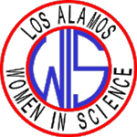
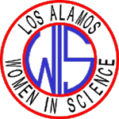

|
 |
|
 |
CONTENTS:
|
 |
|
|
NOTE FROM THE EDITOR
BOARD MEMBERS
PRESIDENT'S MESSAGE
NOTE FROM THE VP
VOLUNTEERS SOUGHT FOR BRING YOUR KIDS TO WORK DAY
EYH REPORT: A SUCCESSFUL WORKSHOP!
QUILT RAFFLE TO SUPPORT NMNWSE CAREERS BOOKLET
LAWIS AWARDS AT LA COUNTY SCIENCE FAIR
NOTES FROM THE LUNCHTALKS AND OTHER LAWIS ACTIVITIES
WOMEN IN SCIENCE AND TECHNOLOGY: CHOICES AND SUCCESSES
FORENSIC DENTISTRY: BITE MARKS AND PHYSICAL ABUSE
MEMBERSHIP INFORMATION
The July 1998 issue follows on the December 1997 issue. Back issues to July 1996 are now available via the LAWIS home page! I apologize for the long delay between the last newsletter and this one: between organizing the LunchTalk Series, creating the new LAWIS listserver, reorganizing the LAWIS web page, and of course doing my research, I have been pretty busy! If you do not currently receive a hardcopy of LAWIS mailings and would like to, or if you have any other comments, corrections, or complaints, please let me know: without feedback it is hard to improve!
I have created a LAWIS listserver to help communication. (And to avoid my inexcusable delay between newsletters!) If you are not on the email distribution and would like to be, please send email to lawis-request@maillist.lanl.gov to get an automated reply telling how to (un)subscribe to and use the listserver (the content of the email will be ignored). Postings should be sent to lawis@lanl.gov (automatically forwarded, so please "pre-screen"), questions and comments should be sent to me (owner-lawis@maillist.lanl.gov). Old postings (grouped by month) are available via the listserver's "list" and "get" commands. You do not need to be a LAWIS member to use the LAWIS mailserver, but we do hope you'll consider becoming a member if you find it useful. For my part, it has been exciting to see the response that requests for volunteers have brought (interviewees for a PBS video on minorities, speakers for Espanola schools, participants for a panel discussion on careers for students in the Bridge program at UNMLA, etc), and to hear about other programs and opportunities for women scientists.
I now also manage the LAWIS home page: it's new location is http://home.lanl.gov/lawis, (the old site should automatically send you to this one; the NMNWSE home page is still at http://ladmac.lanl.gov/NMNWSE/NMNWSE.html). Please let me know if you have any suggestions to improve the LAWIS home page (comments on the state home page should go to the state Newsletter editor and web guru Carol LaDelfe, cladelfe@lanl.gov). I would like to know if people who currently receive the electronic Newsletter would prefer to only get an email notice and pick up the Newsletter itself off the web. (This will entail creating a separate list-server for the newsletter.) Further, a variety of interesting links (sites for kids, the NMWSE Careers booklet, a call for the New Mexico High School Supercomputing Challenge, other WIS-oriented organizations, job ads, etc) are now available from both the LAWIS and NMNWSE home pages, and interesting links will no longer be reported in this Newsletter for brevity. Please send me (or Carol LaDelfe for NMNWSE pages) any web/link updates, additions, corrections, etc.
Finally, I encourage you to buy a raffle ticket to help support publication of the NMNWSE Careers booklet, which we give to EYH participants. The drawing will be held at the State meeting October 23-25, 1998. I have tickets, or contact any board member. See our web page, http://home.lanl.gov/lawis, for a link to the Careers booklet and raffle including pictures of the items being raffled.
-- Tinka Gammel, 667-9149, jtg@lanl.gov
LAWIS Newsletter Editor, LunchTalk Organizer, Listserver and Web Manager
1997-98 LAWIS board members:
| President |
Margo Clark |
|
| Acting Vice President |
Sharon Thomas |
|
| Secretary |
Cass Mason |
|
| Treasurer |
Ginger Young |
|
| Newsletter Editor |
Tinka Gammel |
|
| EYH Co-Chairs |
Joyce Guzik |
|
| Membership |
Carol LaDelfe |
|
| Members-at-Large |
Amy Anderson |
Greetings! Our Los Alamos Chapter (LAWIS) of the New Mexico Network for Women in Science and Engineering (NMNWSE) had a wonderfully successful "Expanding Your Horizons" Conference held here at the Laboratory on March 15, 1998. Our organization has been sponsoring this event since 1980. About 150 eighth- through tenth-grade female students from nineteen schools in Northern New Mexico participated in workshops presented by women scientists and engineers. The level of minority participation was high and a significant number of Hispanic and native American young women were present. This year the students heard a very special and dynamic presentation about the Mars Pathfinder Mission by Linda Robeck, lead engineer for the Mars Lander, who is from the Jet Propulsion Laboratory. Joyce Guzik (chair) and Alexine Salizar (cochair) led this significant effort by our organization. We want to thank all of you in our organization who helped with this effort, either as workshop presenters, "gofers", or with other responsibilities. You have helped ensure that a number of young people have access to information on exciting and meaningful careers in science and engineering.
Speaking of career information, there is another success story to report. This year NMNWSE published "Careers: Exploring the Possibilities", a booklet that discusses over 30 careers in science and engineering, all articles are authored by women, many of whom are from our Northern Chapter of NMNWSE. Our thanks is extended to Jennifer Siders and Ann Mauzy for heading this project, and to many of our members who contributed articles. The information contained in this booklet and some additional careers can be accessed on line at the following Web site: /home/lawis/careers.html
If you know of potential new members, consider inviting them to join us
at one of the LunchTalks or other events. Encourage them to use this
organization to network with other LANL women in the sciences and
engineering. Our web address for our Northern Chapter of NMNWSE is
http://home.lanl.gov/lawis
Check it out sometime.
I enjoyed seeing many of you at our summer picnic!
J. Margo Clark, LAWIS President
Phone: (505) 665-3634, FAX: (505) 667-9726, Email: jmclark@lanl.gov
The state-wide organization, New Mexico Network for Women in Science and Engineering, of which Los Alamos Women in Science is the Northern Chapter, will be electing new board members shortly. There is still time to volunteer if you are interested in a board position. Board meetings are held every two months in different locations around the state. This past year we have met in Las Cruces, Alamogordo, Albuquerque, Socorro (State Science Fair) and Silver City. Meetings are always on Saturdays and usually in the morning from 10-12.
I have served on both the state and local Boards for two years and I have to say that the Network has really helped me a lot. The other women on the Board are great friends and mentors. Serving on the Board was a great opportunity and the networking that I did while on the Board helped me get a job, as well as strengthen my resume. I can't recommend this enough for other postdocs or staff.
I will be leaving for a new job in San Diego shortly, and look forward to getting involved with Women in Science organizations there.
Jennifer Siders
(505) 667-1644
sidersj@ibm.net
[Editors Note: despite my delay in getting this newsletter out, state (and local!) board volunteers are still welcomed. Please contact any board member to inquire about getting involved in NMNWSE or LAWIS activities, or contact me (jtg@lanl.gov, 7-9149) and I will pass your name along.]
Georgia A. Pedicini, CIC-7 MS B294 LANL, 667-8117, gap@lanl.gov, is on the organizing committee for "Take Your Children To Work Day", which is scheduled for Thursday August 13th. She contacted LAWIS to see if we wanted to do something. The LAWIS steering committee decided to encourage individual members to participate rather than having an official LAWIS activity. If you would like to do a demo, or help in any way, contact Georgia (there is still plenty of time to volunteer!). Last year Denise George and I (Tinka Gammel) staffed two "LAWIS demo's". Denise did "The Math of Toys" (she and I brought in all our toys and let the kids play, trying to make the contact with the scientific/mathematical principles the toys use when talking with the kids). I did "Magnets" (a bunch of big and small magnets, paper, iron filings, and a small poster the kids ignore explaining why making a mess with magnets is science). Unfortunately, I will not be in town, but if anyone wants to use my "Magnets" demo (VERY simple, and the kids like it: magnets, iron filings, and a small poster the kids ignore explaining why playing with magnets is science), I'm happy to lend it out. As I am leaving soon, I left it with Denise George, so please contact her to borrow it (dgeorge@lanl.gov, 7-6248). Denise is tentatively also going to repeat "The Math of Toys", and would appreciate help (basically helping the kids solve the puzzles if they get stuck, and trying to point out how math concepts such as topology are used to make the toy).
by Joyce Guzik, EYH co-chair
The Los Alamos Women in Science hosted their 20th Annual Expanding Your Horizons conference at Los Alamos National Laboratory, Wednesday, March 25, 1998. Approximately 130 middle and high school girls and 25 adult teachers and sponsors from as many schools attended the program. The program was funded by donations by many divisions and groups from Los Alamos National Laboratory, as well as statewide and local businesses. The girls participated in a team activity in the morning, an "egg drop", in which they were asked to build egg-cradling containers out of a sheet of paper, soda straws, and tape that would prevent their eggs from breaking while being dropped from increasing heights. The girls then participated in morning and afternoon hands-on workshops in small groups, with women scientists and engineers from around the lab, in addition to medical professionals from the community.
The program concluded with a presentation including slides and a video by guest speaker Linda S. Robeck, a mechanical engineer at the Jet Propulsion Laboratory in Pasadena, California. Linda was in charge of the team that assembled the Lander part of the Mars Pathfinder mission that landed on and explored the geology of Mars last July. Linda Robeck's talk was very well received by the girls and adults alike; unlike previous years, most of the participants stayed until the very end of the program at 3:30. Linda brought a poster of Mars' surface taken by the lander, and 3D glasses for viewing Mars' landscape. She also handed out very nice information postcards about the project. Linda's talk at the Bradbury science museum was also well attended; Linda gave her talk twice to accommodate the overflow crowd. The talk and Expanding Your Horizons was publicized in the laboratory on-line Newsbulletin, Los Alamos Monitor, and Santa Fe New Mexican, and covered in detail with photos in the Monitor. It is evident that Linda takes very seriously speaking to school groups, in particular groups of young women; she had six such engagements scheduled for March, and averages two talks per month. She also has a wonderful sense of humor, and gave us all a very good idea of what it was like to be in charge of assembling the Mars lander, including the extensive testing and numerous setbacks to take in stride when something went wrong or was overlooked, all under the pressure of the launch window deadline.
Overall, the program was a great success, and we are looking forward to next year.
1998 LAWIS Expanding Your Horizons Committee:
Joyce Guzik and Alexine Salazar (co-chairs), Wendee Brunish,
Pat Berger, Kerry Cloud, Renita Cook, J. Margo Clark,
Mary Fitzgerald-Adams, Tinka Gammel, Denise George, Shirley Herrera,
Carol LaDelfe, Patty Mahoney, Ann Mauzy, Dolores Montano,
Carroll Thomas, Trish Wright
PS from the Editor: Margo Clark, LAWIS President, adds her thanks to all who helped make this conference a success. And several of the helpers who received the lovely Nambe magnets from LAWIS asked me to forward their thank-you's to the organizing committee for this thoughtful gift. I hope all of you will consider participating next year!
PPS: The drawing for raffle to support publication of "Careers: Choices and Successes", which we give to each EYH participant, will be held at the Annual State meeting October 23-25, 1998. Raffle tickets may be obtained from any board member (such as yours truly, the editor) up to the time of the drawing. I hope you will consider buying a raffle ticket or making a donation to help support this EYH activity! Pictures of some of the items being raffled may be found via the link to the raffle off the Careers booklet web page: /home/lawis/careers.html
The drawing for raffle to support publication of "Careers: Choices and Successes", which we give to each EYH participant, will be held at the Annual State meeting October 23-25, 1998. Raffle tickets may be obtained from any board member (such as yours truly, the editor) up to the time of the drawing. I hope you will consider buying a raffle ticket or making a donation to help support this EYH activity! Pictures of some of the items being raffled may be found via the link to the raffle off the Careers booklet web page: /home/lawis/careers.html
The 1998 Los Alamos County Science Fair was held February 6-7. Joyce
Guzik, Tinka Gammel, Pat Berger, Ginger Young, and Beki Warren
judged the LAWIS awards. Talking with all the students was great fun,
and as usual, it was very difficult to decide who should receive awards
among so many excellent projects. We tried to err on the side of
encouraging younger kids, and we also coordinated our awards with AAUW
in order that more girls could receive awards. 1-3rd place received a
($25,$15,$10) gift certificate to Otowi Station, and at Denise George's
suggestion, this year we instituted that the 11 honorable mentions also
received a $5 gift certificate. (We planned to give only 10, but the
projects were all so good!) A Mars postcard left over from Linda
Robeck's talk, a "Trust me, I'm a Scientist" bumper sticker, and a
certificate on dinosaur paper was also given to each winner. (As usual,
Otowi Station gave us a discount on all items purchased there, for
which we are grateful.) The winning projects were:
Thank You's received (or at least the ones forwarded to me):
Claire Lackner:
I am honored by your recognition of my science project this year. I
hope that I will someday be a Woman in Science, too. Thank you too for
the gift certificate. I will put it to good use.
[Claire also receive an award from Pajarito Astronomers, and is
interested in astrophysics.]
Jessica Chipera (4th Grade):
Dear Fellow Science Lovers,
I was excited excited when I heard that I received an award
from your group. Thank you for the gift certificate.
I am honored to receive acknowledgement from your group.
Betsy Nichols:
Thanks you for the $5.00 from the Los Alamos Women in Science for my
Science Fair Project called "Heart Throbs: A Comparison of Athletes,
Guys and Gals". I appreciate it very much. I had a lot of fun doing
my Science Fair Project. I am glad you liked it.
Laura Kraemer, PA-4, LANL, kicked off the LAWIS Lunch-Time Talks for 1998 with her talk on Jan. 13 about her experiences serving in AmeriCorps. Laura gave an overview of the program she was in, the National Civilian Community Corps, as well as mentioning other programs under the AmeriCorps umbrella (see http://www.americorps.org). Laura's parents were peace-corps volunteers, and encouraged Laura in her choice to devote part of her time to helping others. Laura was also influenced by Theresa Adams Muranaka, an archeaologist and professor of anthropology at SDSU. It is hard to summarize the diverse experiences Laura related: from teaching English in Romania, to cleaning trash from arroyos in San Diego, CA, to building fish weirs in Tacoma, WA; suffice it to say it was fascinating. Despite occasional hard times, Laura highly recommended that everyone considering serving the community through programs like these. Locally she recommended considering the "Habitat for Humanity" program (in Espanola, 747-2690). Laura was at LANL as an UGS, and is now studying veterinary medicine, but she left literature on these programs, and I will be happy to forward a copy to you if you are interested.
On Feb 12, Ann Pendergrass, ESH-3, LANL, spoke about her career in the field of Safety Analysis. Ann started out in a quite different field: she studied marine biology as an undergraduate, and her doctorate is in Postharvest Physiology (plant growth). She said if she knew she could live and work in a place as nice as Los Alamos, it would have been more efficient have studied nuclear physics and engineering, but she would have missed an enjoyable journey through varied careers. Having a background in research, she was able to a very amusing charicature of the typical scientist mad at having to take safety training when they had "been doing it for 30 years". Ann stressed that Safety Analysis has applications in everything we do, and exists to help people identify hazards in the workplace and minimize risks. A proper safety analysis not only protects the worker, but also helps eliminate spurious results (eg, by identifying sources of possible contamination and developing procedures to minimize the risk), and protects the equipment (eg, from power surges due to inadequate wiring). She illustrated her point with several examples, including design of the drums and equipment for drum handling for shipments to WIPP (the Waste Isolation Pilot Plant, which LAWIS toured in April). Ann welcomes dialog to make the safety process at LANL more helpful and less something researchers view as a hinderance.
On March 12, Teralene Foxx, ESH-20, LANL, spoke on "Birds, Bats, and Bees: An Ecologist's view of why they are important to the Laboratory". Teralene got her start as an ecologist growing up in a prarie with a mother who "was not afraid of snakes". She also was lucky to have some good teachers, although when she got to Kansas State University she was hit with the reality of women in science: her research professor "didn't want women". Teralene made it her goal that he accept women, and was successful. Eventually she ended up at LANL studying endangered species on lab lands; many members of her team working on the LANL site-wide Environmental Impact Statement were in the audience. She showed pictures of several of the sensitive, threatened, and endangered species that live on lab grounds (spotted owl, Jemez salamander, peregrin falcon, etc). Teralene pointed out that protecting and monitoring the local environment is important to the laboratory not just as we need to be in compliance with environmental regulations, but also as a tool to recruit people (scenic local/quality of life), and as a sensitive measure of whether LANL is providing a "safe, healthy workplace". Teralene stressed that each of us has a responsibility to see how our own programs affect the lab; ESH should not act as a policeman, but rather should "provide tools" to assess the environmental impact of a particular program. She also communicated a bit of her own passion for the organisms that live here, and for learning how to take care of them. If you are interested in finding out more about plants and animals on laboratory lands, Teralene has recently completed the Annotated Checklist and Database for Vascular Plants of the Jemez Mountains (available via the LANL library at http://lib-www.lanl.gov/la-pubs/00412761.pdf; see also http://lib-www.lanl.gov/pubs/Environment.htm for a listing of LANL environmental publications, including an atlas of breeding birds, a report on local bats, and information on fungi in Los Alamos county). Contact Teralene if you'd like more information on LANL's environmental programs.
On April 3-4, several LAWIS members, with some friends and family, drove down to Carlsbad to tour the Waste Isolation Pilot Plant (WIPP), see Carlsbad Caverns, and visit Trinity Site. It was an especially meaningful trip for me as it was my 40th birthday. (The other people on the trip surprised me with small gifts and a cake - Thanks!!) At WIPP, we first got an informative tour of the above ground facilities and the purpose of WIPP. We then went below ground, where we could see where the waste would actually be stored. We were allowed to take home some salt cores as souveneirs. I found especially interesting that one could already see in the older passages that the salt was already starting to creep in and seal the room. Some of us then went to Carlsbad Caverns for a guided tour of Lower Cave, where we had to wear hard hats, but didn't have to crawl in the mud (unfortunately that tour was already full....). The next morning we headed out for Trinity site. Unfortunately it was an extremely windy day, but nonetheless it was interesting to see where the first atomic bomb exploded, and to see the large crowds. A few of us returned to Carlsbad Caverns for a tour of Slaughter Canyon Cave aftering touring Trinity Site. Everyone reports to have had a great time. Several people wanted to come but couldn't make it this time; there seems to be enough interest to try a combined Trinity Site/Geology field trip or a Carlsbad Cavern Tour again in a year or two. It was also suggested that NMNWSE try a "State Field Trip" sometime.
On April 7, Jan Frigo, NIS-1, LANL, gave the next LunchTalk on "Biologically Motivationed Autonomous Vehicle Control", which I subtitled "Robot Bugs Conquer Earth". Jan explained a bit about how these robot bugs are made and brought several "bugs". A single oscillating LRC circuit mimics the wings of a butterfly. Two solar-powered circuits can lead to a "light-seeking bug". Understanding and controlling this "bug behavior" is important to LANL for design of remote handling systems for hazardous material, but also has implications in other fields, including of course understanding real bugs. The audience was small, but there were lots of questions and Jan let us try the bugs ourselves. I am afraid I was having so much fun I did not take good notes: I can see why her "Expanding Your Horizons" workshop on this topic got such rave reviews!
On April 16, Carol Hogsett, GRA Representative at LANL and geologist by training (you may remember the excellent talk she gave to LAWIS last fall), conducting a tour to the Jemez and the Milagro Gamma Ray Burst Observatory for several SERS/URS students here at LANL. She graciously volunteered to make this a LAWIS event as well. While there was a lot of interest in this field trip, due to various conflicts only two of us ended up being able to go. I am trying to arrange a repeat by Carol, or one of the several other LAWIS members who are geologists, hopefully in the next month or two.
On May 14, Wendee Brunish reported on the 25th anniversary conference on Women in Science and Engineering: Choices and Successes, sponsored by the New York Academy of Sciences, which she attended. Her summary of the conference follows as the next article.
On June 11, Jeanne Fair, EES-15, LANL, spoke on "The Ecological and Physiological Cost of Contaminants on Cavity Nesting Birds". Jeanne is one of the people responsible for the bird-houses with the "environmental monitoring station" signs you may have noticed on many of the local trails, and she spoke about what she has learned so far from this study. (Jeanne works with Teralene Foxx who spoke in March, and can also be contacted to learn more about the environmental studies of plants and animals being done at LANL.) As nestlings go from a few grams to adult weight in a few weeks, they are very susceptible to environmental influences during this period, and hence nestling health and survival is a good indicator for environmental stress or contamination. Jeanne noted that birds have a very poor sense of smell and so one can investigate the nests for ticks, lice, and other parasites, and weigh, measure and take blood from the nestlings, etc, without causing the nest to be abandoned. With approximately 450 birdboxes, this is the largest study of it's kind in N. America. The most common birds to take residence in the boxes were western bluebirds ("they just like the boxes") and ash-throated flycatchers (previously unstudied, so a scientific bonus). The flycatcher leaves the nest later and needs 22% more energy in the nest, so bluebirds do slightly better in stressful conditions like arid NM. Jeanne found that the bluebirds died mostly from predation, 82% hatched, 83% fledged, whereas for flycatchers the main cause of death is starvation, 77% hatched, 72% fledged. Bird malaria was the most common blood parasite for both. As blood was collected, Jeanne is also studying gene flow between canyons, another bonus for bird research. Jeanne has yet to correlate the data she took with known contaminants in the areas where the boxes were situated, and against the control boxes in uncontaminated areas. I am looking forward to learning the answer in a future talk!
On July 8, Betty Harris, NMT-1 CMR, LANL, spoke on "Sensitivity of Once Shocked, Weathered, High Explosives" - work she has been doing in the context of the Environmental Restoration Project at LANL after noticing that some nominally non-explosive pink material found at a firing site was explosive (PBX-9007). Betty collected chunks of high-energy explosives (referred to as HE, not HEE) from various sites around the lab where HE work has resulted in extensive contamination of the soil, sanitary drain systems, storage tanks, buildings, etc. Betty found a wide variation in the sensitivity of the HE as compared to their nominal sensitivity, as measured by flame tests, drop weight impact tests, spark tests, etc. (Betty explained these tests.) However, except for a few organic HE's (such as cyclotol, which broke down into nonexplosive but toxic compounds), it appeared that this variation was due more to variations in manufacture and lack of standardization of the tests than due to weathering. This is because most HE's (eg, HMX, a typical HE used at LANL) are fairly stable unless shocked, and hence not subject to weathering. However, Betty did state that they did not separately test the outer surface of the HE chunks collected, and there may be surface effects which they would not have observed. So pay attention to those warning signs around the lab: HE's don't "go away". On the positive side, only deflagration, not explosion, is expected from modern HE's without engineering for weapons use.
The LAWIS Summer picnic was held at noon on July 10 at Ashley Pond. Luckily it was a nice day, and about 30 people attended. Most people agreed the new lunch time format (as opposed to the traditional late afternoon picnic) was a good idea. LAWIS provided a giant submarine sandwich, and we shared potluck side dishes and deserts. The quilts being raffled by NMNWSE to support EYH activities were displayed, and $58 worth of raffle tickets were sold! I think everyone had a good time, and I also noticed some networking going on: an overall success!
The next lunchtalk is Aug. 4. At 12 noon in Otowi sideroom C, Joyce Guzik, X-TA, LANL, will speak on "Massive Exploding Stars". I hope to see you there!
-- Tinka Gammel, LAWIS LunchTalk Organizer, 667-9149
Wendee M. Brunish for Los Alamos Women in Science
On March 12 and 13, 1998, I attended a meeting hosted by the New York Academy of Sciences on Women in Science and Technology: Choices and Successes. The purpose of this meeting, which marked the 25th anniversary of an earlier meeting on women in science, was to discuss barriers and success strategies that have emerged over the last two and a half decades. Some of the issues that affect women in science include the "leaky" pipeline and the "two-body" problem. Other issues discussed include the perception of good science vs. "female" science, and the affect of hostile climates on women scientists. The meeting attracted many interesting and famous women speakers, including Dr. Gertrude B. Elion, Nobel Laureate in Medicine, Sheila Tobias, Author of "They're Not Dumb, They're Different", Judy Franz, Executive Officer, American Physical Society, and Paula Rayman, Director, Radcliffe Public Policy Institute.
The meeting began with a brief overview of the current status of women in the workplace. Women are still underrepresented in science (22%) and engineering (8%). The numbers are fairly high in the 'softer' sciences like biology, and lower in the "hard sciences" like physics, and lowest in engineering. Overall, women earn about three-quarters of what men earn, with about half of this discrepancy being related to education level and job content. In both industry and academia, women are generally one full step behind their male counterparts. These means that women with the same education and years of experience as their male counterparts will, for example, attain the assistant professor rank at about the same time as their male counterpart becomes an associate professor. However, surveys indicate that, among scientists, women place just as much value on their careers as men do.
The discussion of the "leaky" pipeline was led by Paula Rayman of the Radcliffe Public Policy Institute, and concluded that access is not enough. Attrition rates for women in science continue to exceed that for men (56% vs. 39%) even when corrected to compare those with equal abilities. Whenever access opens up, women enter fields in increased numbers, but continued progress is not inevitable. For instance, when graduate programs were opened to women between the 1900's and the 1920's, the numbers increased rapidly. But subsequently, from the 1930's to 1960's, there was a decline in the percentage of women in these programs. When the new technology of computer sciences was developing, women entered the field in record numbers, reaching an all-time high of 40% women. But as the field matured and became more structured and traditional hierarchies became entrenched, the numbers dropped quickly to the 23%. The lesson is that achieving a "critical mass" is an elusive goal. Although it is tempting to believe that once women enter a field in sufficient numbers the climate will change and be more welcoming to women, past experience does not always bear this out.
The two-body problem for women in science was discussed by Mary C. Mattis, Catalyst, Inc., a company that conducts many surveys on women in scientific and technical fields. Despite the relaxing of stereotyped roles, women continue to bear a heavier share of home/family responsibilities, even when both spouses work full time and the woman makes as much or more money than her husband. Women scientists are more likely than men scientists to have a full-time working spouse. Moreover, women scientists are much more likely than men scientists to have a scientist spouse. Women scientists who are married virtually always have a spouse whose career is as demanding and absorbing as theirs is. This means that few women scientists are in the position that many male scientists are of having a spouse who does not work or who works part-time, and can therefore shoulder more of the home and family responsibilities. To complicate matters further, many women are reluctant to cede homemaking and child-rearing responsibilities to their partners, feeling threatened or "de-feminized" by the loss of this traditionally female prerogative.
Gerald Holton of Harvard University reported on his research into whether "female" science was different from and/or inferior to traditional science. For centuries, the dominant scientific style has been "bonding through competitiveness", but women may be less comfortable competing. Instead women historically prefer collaboration and consensus. Women are more apt to say that they are very concerned about honesty and integrity in their work. In their research female scientists also strive more for synthesis, comprehensiveness, and thoroughness. As a result, many women scientist have fewer publications but more citations. This style may work against women when traditional evaluation methods for hiring and tenure are used, such as number of publications.
Under a pilot program put together by the American Physical Society, a small team led by Judy Franz performed climate surveys by invitation of graduate physics departments. Not surprisingly, they found that what both women and men wanted was to feel like "valued members of the community". However, many women cited a "litany of small indignities" that they experienced in graduate school or in their workplace. Women often reported that felt isolated, and had difficulty finding an effective mentor. They also reported that they felt excluded from many informal social and networking opportunities, and that they did not feel that they had as much political know-how as their male counterparts. Follow-up surveys found that dramatic improvements in climate could be effected through relatively simple and inexpensive measures. The key seemed to be an elevated awareness combined with a visible commitment to improvement by top managers.
Women scientists who had succeeded in a variety of fields and organizations were asked what strategies they had used to succeed. The most commonly cited, by almost three-quarters of the respondents, was to exceed the expectations of their peers and managers. Almost half of the women recommended seeking out and taking on challenging assignments, while an equal number suggested taking steps to make males comfortable in their presence. Others necessary qualities included persistence, resiliency, and self-confidence, having the wisdom to choose one's battles, and being able to find effective role models, mentors, and sponsors. The rewards that women scientists who succeeded valued most were very similar to those cited by men and included money, power, and increased self-confidence. Other rewards included being able to make a difference, and having the opportunity to teach and mentor others. Finally, being able to set and achieve goals, and finding ways to balance work and family demands were also mentioned as very gratifying by successful women scientists.
Based on surveys of science and technology companies who have been extremely successful in their attempts to hire, retain, and develop women, the following success strategies for organizations. One important guideline is to focus on retention and promotion, not just recruiting. Equally important is to institute flexible policies that contribute to work/family balance. It is also vital to provide a demonstrated management commitment to eliminating hostile climates. Managers at all levels must take steps to prevent women from becoming isolated by ensuring that women are included in all formal and informal communication networks. And finally, the organization should encourage and reward women who serve as role models, mentors, and sponsors.
The current status was summed up with the results of a survey of 60 science and technology companies about where the ranked on a scale measuring the acceptance of women in the workplace. One-third of the respondents characterized themselves as being in the first or second stage, which occur, respectively, when women remain isolated and when they seek to emulate men to gain acceptance. The next stage, where women are present in high enough numbers to begin to challenge the status quo, was reported by fully 60% of the respondents. Four companies reported that women are integrated into the workforce and respected by their co-workers and managers, while none claimed to be in the final stage, where gender becomes irrelevant.
To summarize some of what I heard during the two-day conference, progress continues on many fronts. However, without continued efforts, success is not assured. Many obstacles still exist that make it difficult for women to pursue a successful career in science and technology. Major barriers to success for women scientists include the lack of suitable mentors, role models, and sponsors for female scientists, the continuing existence in many places of a hostile work environment (although in most cases this environment was caused by ignorance rather than malice), and the lack of policies and resources to ease family/work balance conflicts (exacerbated by the prevalence of the two-body problem for women). Other issues included exclusion from networking, lack of political know-how, and the fact that male scientists and managers often felt less comfortable working with women than with men. Women who are succeeding do so by dint of hard work, perseverance, and careful selection of mentors and sponsors who could help them in their careers.
From: DreamDoc13 <DreamDoc13@aol.com>
Date: Thu, 7 May 1998
Subject: Sharing my expertise and mentoring
As a woman in the field of dentistry, I was surprised at what a natural choice this field would be for women with an aptitude for science and the arts. The field remains predominantly male. In addition, information about certain specialties remains difficult if not impossible to acquire. My area of specialty is forensic studies. I am currently preparing to seek board accredidation as a Forensic Odontologist and have trained with the Armed Forces Institute of Pathology as well as with Northwestern University and the University of Texas in San Antonio. The field encompasses the identification of remains of missing persons, identification of remains from disasters, as well as the identification of bite marks left by abusers on living or deceased individuals. Bite marks (so much in the media these days) can frequently be the heaviest piece of evidence used to convict or acquit alledged perpetrators of physical abuse.
If you feel that I can share my knowledge and help mentor a woman to study the field or perhaps others as to the proper documentation of bite marks and their use in conviction, please correspond. There is additional information available at my web page (www.the-toothfairy.com) and my aol address is Dreamdoc13@aol.com.
Thank you for your time.
Dr. Marianne Schaefer